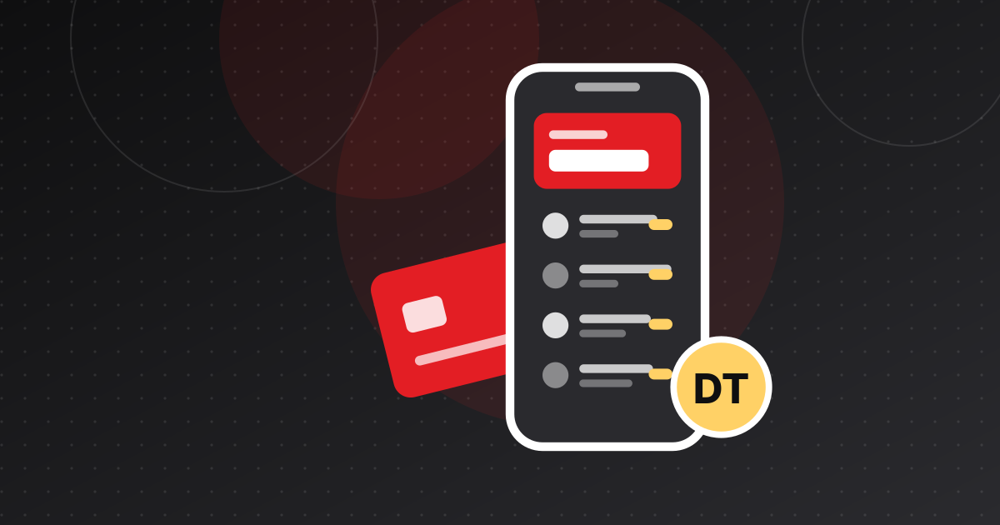

EasyBank lève 1,2 million de dinars pour faciliter le crédit
Créée en 2023, la fintech tunisienne EasyBank a levé 1,2 million de dinars pour développer sa plateforme d'accès au crédit fondée sur l'IA et s'étendre.

À retenir
- EasyBank, créée en 2023, a levé 1,2 million de dinars (environ 370 000 dollars) auprès d'investisseurs non dévoilés.
- C'est une plateforme numérique qui utilise l'IA pour simplifier les produits bancaires, conseiller les utilisateurs et accélérer l'évaluation de l'éligibilité au crédit ; ce n'est pas une banque agréée.
- L'entreprise veut se développer sur des marchés mal desservis de la région MENA et en France.
- Sa levée figure parmi les six opérations publiques tunisiennes du S1 2025, avant le quasi-arrêt des financements au S1 2026.
La fintech tunisienne EasyBank a levé 1,2 million de dinars (environ 370 000 dollars) auprès d'investisseurs non dévoilés. Créée en 2023, la startup exploite une plateforme numérique qui s'appuie sur l'IA pour faciliter l'accès au crédit et aux services bancaires. Les fonds doivent servir à améliorer la plateforme et à se développer au Moyen-Orient, en Afrique du Nord et en France.
La levée de 370 000 dollars d'EasyBank : l'essentiel
- Montant : 1,2 million de dinars, soit environ 370 000 dollars.
- Investisseurs : non communiqués, tout comme le type de tour.
- Annonce : Wamda a révélé l'opération le 31 janvier 2025, et l'annonce d'EasyBank a été reprise le 4 février 2025.
- Direction : fondée par un groupe d'entrepreneurs et d'experts de la fintech, l'entreprise est dirigée par Mohamed Khelifi.
- Utilisation des fonds : amélioration de la plateforme et expansion vers des marchés mal desservis de la région MENA et en France.
Ce que fait EasyBank
Malgré son nom, EasyBank n'est pas une banque agréée, et aucun article ne la présente comme un prêteur. Selon Wamda et Launch Base Africa, il s'agit d'une plateforme numérique qui simplifie les produits bancaires et aide les utilisateurs à demander un crédit et à accéder à d'autres services bancaires.
L'IA est au cœur du produit. EasyBank affirme analyser les données des utilisateurs pour formuler des recommandations financières personnalisées et accélérer l'évaluation de l'éligibilité au crédit, afin de réduire les délais et la paperasse. La cible : les particuliers et les entreprises pour qui la banque traditionnelle reste difficile d'accès.
Aucun article ne mentionne de nombre d'utilisateurs, de banques partenaires ou d'agrément. Les sources publiques ne permettent donc pas de savoir comment la plateforme se rémunère ni avec quelles banques elle travaille.
Source : World Bank Global Findex (indicator FX.OWN.TOTL.ZS)
Voir les données
| Libellé | Valeur |
|---|---|
| 2014 | 27,4 % |
| 2017 | 36,9 % |
| 2021 | 36,9 % |
| 2024 | 37,8 % |
Le besoin visé
EasyBank s'attaque à un vrai problème. Selon le Global Findex de la Banque mondiale, seuls 37,8 % des adultes tunisiens détenaient un compte auprès d'une institution financière ou d'un service de mobile money en 2024. Ce taux n'a presque pas bougé depuis 2017 (36,9 %). Les données complètes sont dans notre dossier sur l'inclusion financière en Tunisie.
Pour beaucoup de Tunisiens et de petites entreprises, la difficulté n'est pas tant d'ouvrir un compte que de comprendre les offres de crédit, réunir les justificatifs et savoir si l'on est éligible. Un outil qui compare les offres et vérifie l'éligibilité en amont peut aider, à condition d'être solidement connecté aux banques qui accordent réellement les prêts.
Cap sur la région MENA et la France
Dans une déclaration rapportée par Launch Base Africa, Mohamed Khelifi a affirmé vouloir « combler le fossé entre la banque traditionnelle et l'économie numérique ». Il a ajouté qu'avec cet investissement, l'entreprise était « bien placée pour développer ses activités et proposer ses solutions sur de nouveaux marchés ».
La France est une cible logique pour une fintech tunisienne, compte tenu de l'importance de la diaspora. Mais chaque nouveau marché impose ses propres règles d'agrément et de protection des données, et 370 000 dollars vont vite s'épuiser s'ils sont répartis entre plusieurs pays. L'entreprise n'a publié ni calendrier ni liste de marchés prioritaires.
Un petit tour de table dans un marché qui se resserre
La levée est modeste, mais elle est arrivée au bon moment. Launch Base Africa a classé EasyBank parmi les six opérations publiques, pour environ 5,4 millions de dollars, réalisées en Tunisie au premier semestre 2025. Un an plus tard, au S1 2026, le même média ne relevait presque plus aucune levée en fonds propres dans le pays (voir le quasi-désert des levées au S1 2026).
Le contraste montre à quelle vitesse les conditions de financement ont changé. Les fintechs tunisiennes qui ont levé en 2025 doivent désormais faire durer ces fonds dans un marché où les tours suivants se font rares. Pour les fondateurs qui préparent une levée, voir comment lever des fonds pour une fintech tunisienne.
Pourquoi c'est important
EasyBank fait partie des startups tunisiennes qui misent sur le numérique pour toucher les clients mal servis par les banques. Les points à suivre : sa capacité à nouer des partenariats durables avec les banques tunisiennes, sa gestion de la réglementation à mesure qu'elle grandit, et la question de savoir si un tour d'amorçage suffit pour s'implanter sur plusieurs marchés. Pour situer ce type d'acteur, voir des néobanques peuvent-elles émerger en Tunisie ?
Entreprises citées
Questions fréquentes
Combien EasyBank a-t-elle levé ?
EasyBank a levé 1,2 million de dinars, soit environ 370 000 dollars, auprès d'investisseurs non dévoilés. L'opération a été rendue publique fin janvier et début février 2025.
EasyBank est-elle une banque ?
Non. Malgré son nom, les articles la décrivent comme une plateforme numérique qui simplifie les produits bancaires et facilite l'accès au crédit et aux services bancaires, avec de l'IA pour le conseil et l'évaluation de l'éligibilité. Aucun ne mentionne d'agrément bancaire.
Où EasyBank veut-elle se développer ?
L'entreprise prévoit de cibler des marchés mal desservis au Moyen-Orient, en Afrique du Nord et en France. Elle n'a publié ni calendrier ni liste de pays.
Sources
- Tunisian startup EasyBank secures $370,000 — Techpression
- Tunisia's EasyBank secures funding to expand digital financial services across MENA and France — Launch Base Africa
- Tunisian fintech EasyBank secures $370,000 investment — Wamda
- Account ownership at a financial institution or with a mobile-money-service provider (% of population ages 15+) — Tunisia — World Bank Global Findex
- Near Zero Equity Deals in H1: What Happened to Tunisia's Startup Ecosystem? — Launch Base Africa
Cet article est fourni à titre d'information et ne constitue pas un conseil juridique, financier ou en investissement. Les chiffres sont datés et sourcés ; vérifiez les dernières publications officielles avant toute décision.